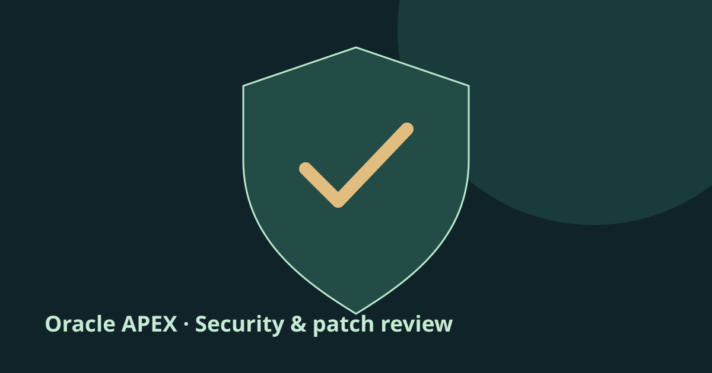
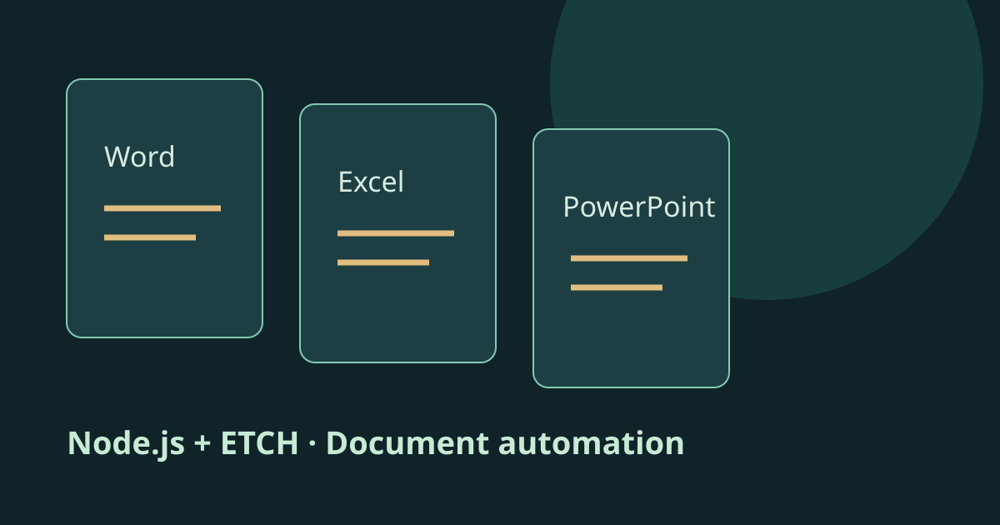
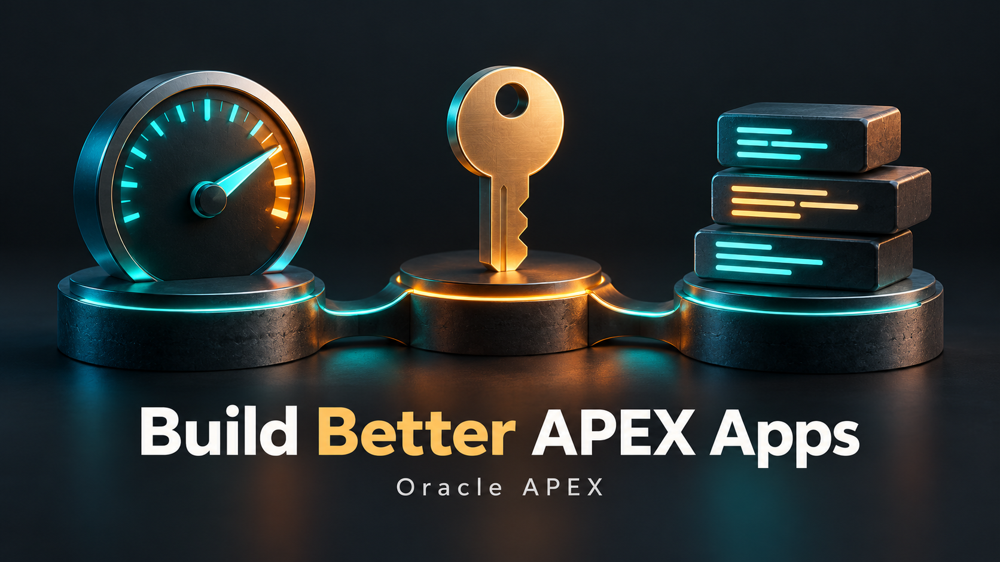
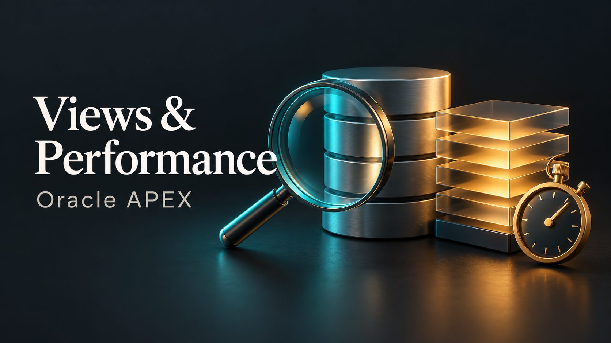
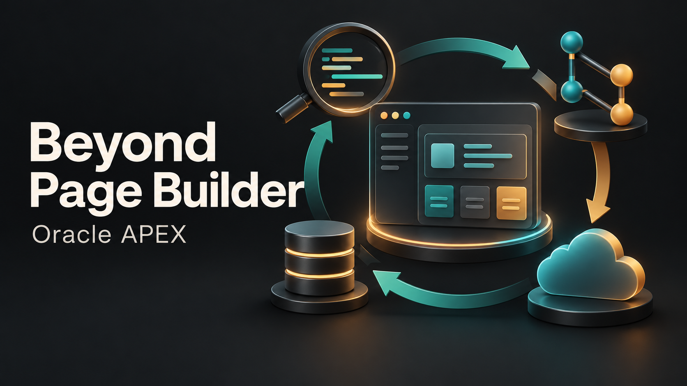
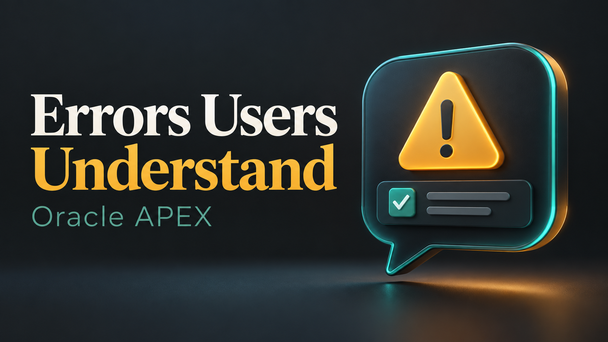

وضع التوافق في Oracle APEX: راجع قبل التغيير
قائمة مراجعة واختبارات قبل تغيير وضع التوافق، مع توضيح الفرق بينه وبين إصدار APEX والثيم، وتحديث وضع Advisor في APEX 26.2.
اقرأ المقال ←33 مقالًا. أفكار قابلة للتطبيق في Oracle APEX والبيانات والواجهات. لكل مقال نسختان بالإنجليزية والعربية.
33 مقال
قائمة مراجعة واختبارات قبل تغيير وضع التوافق، مع توضيح الفرق بينه وبين إصدار APEX والثيم، وتحديث وضع Advisor في APEX 26.2.
اقرأ المقال ←
تتضمن نشرة التحديثات الأمنية من Oracle لشهر أكتوبر 2026 الثغرة CVE-2026-101521 في Oracle APEX، بدرجة 9.8 وفق CVSS 3.1. توضح Oracle إمكانية استغلالها عن بُعد عبر HTTPS دون مصادقة…
اقرأ المقال ←
فرق العمل تحتاج أحيانًا نفس البيانات في فاتورة Word أو ملف Excel شهري أو عرض PowerPoint. بناء كل تصميم داخل الكود يجعل تغييرات الشكل البسيطة محتاجة تدخل من المطور.
اقرأ المقال ←
APEX تدعم Friendly URLs والصيغة الأقدم f?p. فهم الرابط بيساعد في تشخيص التنقل وقيم الجلسة غير المتوقعة.
اقرأ المقال ←
زر داخل صف Interactive Grid يقدر يجيب بيانات مرتبطة من غير تحديث الصفحة كلها. المهم توضيح هوية السجل والصلاحيات وطريقة الحفظ.
اقرأ المقال ←
القائمة الجانبية اللي تفضل مفتوحة بعد التنقل ممكن تضايق المستخدم على الموبايل. ابدأ بإعادة المشكلة على إصدار الـTheme المستخدم فعلًا، وراجع سلوك التنقل المدمج.
اقرأ المقال ←
مستخدمان ممكن يفتحوا نفس السجل، وكل واحد يشوف رسالة حفظ ناجح، ومع ذلك تعديل واحد يختفي بسبب حفظ نسخة قديمة.
اقرأ المقال ←
التطبيق الموثوق في APEX محتاج أكثر من Form شغالة. ثلاث قرارات بتسهل التعامل مع المشاكل اليومية.
اقرأ المقال ←لما أبدأ نظام APEX، أفضل أفهم العملية التجارية قبل توليد الفورمز. بناء واجهة جيدة بيكون أسهل لما ملكية البيانات والحالات والقواعد تكون واضحة.
اقرأ المقال ←
فتح كل صفحة يدويًا طريقة بطيئة للإجابة عن «العنصر ده مستخدم فين؟». APEX Dictionary Views بتعرض Metadata التطبيق، وتقدر تستعلم عنها للجرد والمراجعة والتوثيق.
اقرأ المقال ←السؤال المفيد مش مجرد: أي طلب شكله أسرع؟ السؤال هو: تصرف المستخدم محتاج دورة معالجة إيه؟
اقرأ المقال ←Checkbox داخل تقرير طويل المفروض تحفظ التغيير من غير ما ترجع المستخدم لأول الصفحة. التنفيذ الموثوق محتاج Callback آمنة وسلوك Refresh مقصود.
اقرأ المقال ←ظهور رسالة خطأ في الصفحة لا يعني بالضرورة إن كل تغيير حصل في قاعدة البيانات اتلغى. حدود الـTransaction في APEX محتاجة فهم واضح.
اقرأ المقال ←في نموذج مصروفات يحتوي على بنود تنقل متكررة، Alpine.js تقدر تدير تعديل الصفوف، وAPEX تتولى المعالجة على السيرفر. المثال الأصلي استخدم Modal Dialog وStatic Content Region…
اقرأ المقال ←أحيانًا الفورم يحتاج إدخال وقت فقط بطريقة واضحة. Flatpickr تقدر توفر التفاعل ده داخل صفحة APEX لما سلوكها يناسب التطبيق. وكل الشكر للمهندس أحمد شريف — Ahmed Sherif، اللي ذكرت فضله…
اقرأ المقال ←
QUALIFY بتسهل التعبير عن مهمة متكررة في التقارير: فلترة الصفوف بعد حساب Analytic Function. الخاصية موثقة في Oracle AI Database 26ai؛ تأكد من دعمها في إصدار قاعدة البيانات اللي…
اقرأ المقال ←إعلان من الأرشيف: المقال يحافظ على فكرة بوست سابق لإطلاق كورس على LinkedIn. ليس إعلانًا عن كورس يبدأ اليوم، ولا فتحًا لتسجيل جديد.
اقرأ المقال ←APEX بتوفر أدوات مفيدة لإدارة أمان الجلسات، لكن لازم نفهم حدودها قبل الاعتماد عليها. البوست الأصلي بالغ في وصف الحماية.
اقرأ المقال ←
Oracle أعلنت APEX 26.2 يوم 6 أكتوبر 2026. سؤالي في البوست الأصلي كان عمليًا: إيه اللي هيتغير في طريقة شغلنا؟
اقرأ المقال ←أنا كريم الجيزاوي، خريج هندسة، واخترت أتعمق في Oracle APEX وSQL وPL/SQL. اللي جذبني للمجال هو تحويل إجراءات العمل اليومية لخدمات رقمية مفيدة وسهلة الاستخدام.
اقرأ المقال ←Session State مفيدة كسياق للتطبيق، لكنها مش طبقة حماية تلقائية لكل REST API التطبيق بيتعامل معها.
اقرأ المقال ←APEX يقدر يستهلك REST API عن طريق REST Data Sources أو APEX_WEB_SERVICE، لكن نجاح أول طلب مجرد بداية لتكامل يعتمد عليه.
اقرأ المقال ←أحيانًا تحتاج تراجع Tables أو Packages أو تشغل SQL من غير التنقل بين صفحات التطبيق. SQL Developer Web أحد الخيارات المتاحة من خلال ORDS.
اقرأ المقال ←
رسائل ORA-01400 وORA-00001 مفهومة للمطور، لكنها غالبًا لا توضح للمستخدم يعمل إيه. Error Handling Function في APEX تقدر تحول الأخطاء المعروفة لرسائل مفيدة، مع الاحتفاظ بتفاصيل…
اقرأ المقال ←Custom HTML Attributes طريقة مفيدة لتحديد العناصر اللي هتشترك في سلوك واحد. الـAttribute بيوصف المطلوب، وJavaScript هو اللي بينفذ السلوك.
اقرأ المقال ←Ajax Callback مفيد لما تحتاج نتيجة محددة من السيرفر بدون Submit كامل، زي جلب إجمالي طلب بعد تغيير الطلب المختار.
اقرأ المقال ←تطبيق APEX محتاج أكتر من صفحات وتقارير. مع نموه، الفريق يحتاج يراجع التغييرات ويفهم الاعتماديات ويكرر النشر ويشخّص المشاكل.
اقرأ المقال ←نقل استعلام التقرير إلى View ممكن ينظم الكود ويسهّل إعادة استخدامه، لكنه لوحده مش ضمان إن الاستعلام يبقى أسرع.
اقرأ المقال ←البوست الأصلي كان تجميعة أفكار وموارد من مجتمع APEX. أفضل استفادة منها إنك تربط كل موضوع باحتياج حقيقي في التطبيق.
اقرأ المقال ←
المستخدم ممكن يفضل يكتب في Form عدة دقائق من غير أي Request للسيرفر. هو شايف نفسه شغال، لكن السيرفر ممكن يعتبر الجلسة غير نشطة.
اقرأ المقال ←تكرار :APP_USER في كل Form ممكن يتنسي. في الجداول اللي التطبيق مسؤول عنها، تقدر تستخدم Default على مستوى العمود لتسجيل المستخدم اللي أنشأ السجل:
اقرأ المقال ←الفحص الصحي لتطبيق APEX لازم يجاوب على أربع أسئلة: هل الوظائف شغالة صح؟ هل الأداء مقبول؟ هل الصلاحيات مطبقة؟ وهل فيه معلومات كفاية لتشخيص الأخطاء؟
اقرأ المقال ←الصفحات البطيئة، وشروط الصلاحيات المتكررة، وكود PL/SQL المتوزع في أماكن كثيرة، من أكثر المشاكل اللي بتصعّب صيانة تطبيقات APEX. دي نفس المحاور اللي اتكلمت عنها في البوست الأصلي، لكن…
اقرأ المقال ←لا توجد مقالات مطابقة. جرّب كلمة أخرى.